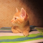
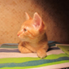

Размышления о жизни
Существует много вещей, которые безразличны собакам, но кошки от них без ума.
К примеру, любимое место кота — это клавиатура компьютера. Собака не будет постоянно спать на клавиатуре.
Существует много вещей, которые безразличны собакам, но кошки от них без ума.
К примеру, любимое место кота — это клавиатура компьютера. Собака не будет постоянно спать на клавиатуре.
 
